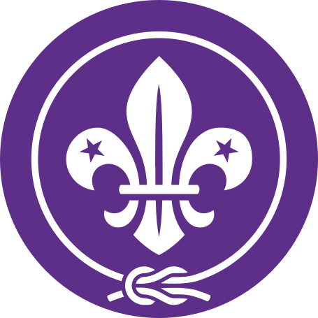

Tabler Icons v3.48.0, © 2020–2026 Paweł Kuna and contributors. MIT license. Original SVG geometry is retained; the interface supplies presentation colors.

WOSM 2024.svg, attributed to the World Organization of the Scout Movement, with contributors recorded in the Wikimedia Commons file history. CC BY-SA 4.0. The original SVG is unchanged; the display uses a transparent PNG rasterization of that artwork under the same license. It provides Scouting context and is not a replica of the national award badge.

The unchanged maroon and gold crest comes from Ananda College, Colombo?s official website. Copyright remains with the school; used to identify the School Colours record.
The existing portfolio asset character-assets/university-of-colombo.png is reused unchanged as institutional context.
Exact source URLs and SHA-256 records · Rendered comparisons
PAFFREL, Hemas, Rupavahini, AIESEC, and the Welfare Benefits Board marks were obtained from their official websites. The University of Colombo crest is an existing portfolio asset. The club-specific gold phoenix emblem comes from the Leo Club of Mahara Youth cover, cropped and with its edge-connected white background removed, without recoloring or redrawing. All organization marks remain the property of their respective owners.